The History of Direct3D
Twenty-seven years of Microsoft's graphics API, told through one spinning cube. Every sample renders the exact same thing — so the only thing that changes is the code it takes to get there.
The GPU went from a fixed appliance you configure, to a programmable processor you feed, to a raw device you manage.
Want to run the samples? Every one is a single-file Win32 program. Clone github.com/jasonsandlin/HistoryOfD3D and build them with .\build-all.ps1 (Visual Studio with C++), or grab the prebuilt offline edition from the latest release.
Six eras, one cube
Click an era to see what defined it.
The GPU is an appliance you configure.
Hardware transform & lighting; fixed-function render states.
Meanwhile, in hardware: GeForce 256 brings hardware T&L to consumer PCs.
Consolidation, and the first programmable shaders.
DirectDraw folded in; vertex/index buffers; shader assembly (SM 1.x).
Meanwhile, in hardware: Programmable vertex units arrive; the original Xbox (2001) is built on a D3D8-class GPU.
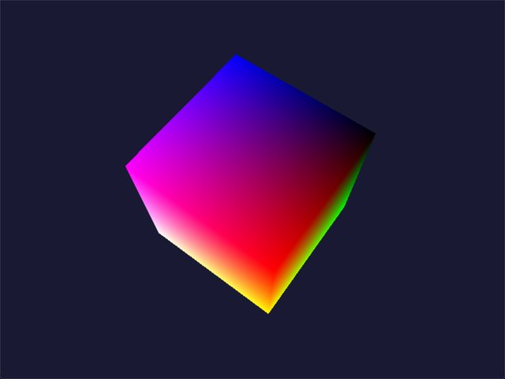
The programmable pipeline matures.
HLSL; vertex & pixel shaders you write.
Meanwhile, in hardware: SM 2.0/3.0 hardware; the Xbox 360 era of D3D9-style development.
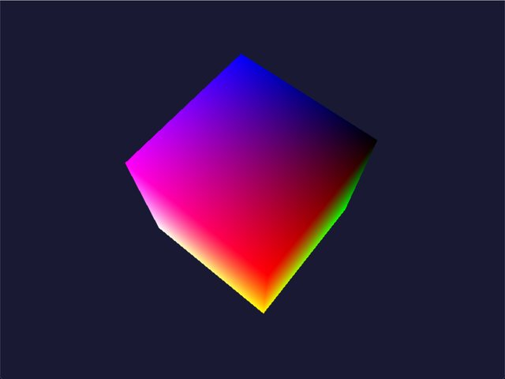
Tear it down and rebuild it clean.
No fixed function; DXGI; constant buffers; geometry shader.
Meanwhile, in hardware: Unified shader cores replace separate vertex/pixel units.
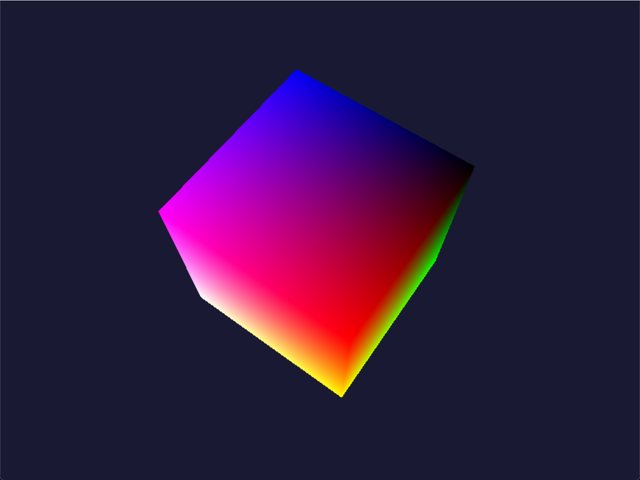
The GPU becomes a general compute device.
Multithreading; tessellation; DirectCompute; feature levels.
Meanwhile, in hardware: GPGPU goes mainstream; Xbox One ships with a D3D11.x-class API.
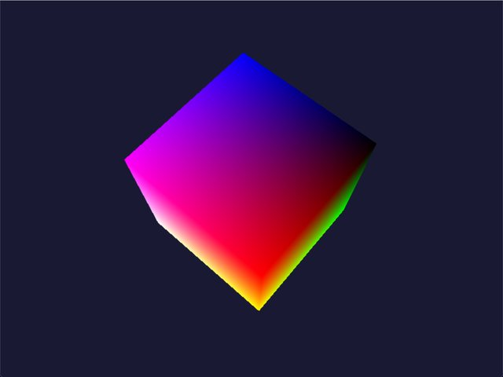
Same cube. More code.
When D3D7 needs 165 lines and D3D12's fundamentals need 640, that difference isn't noise — it is the lesson. Every extra line buys back control the older runtimes were quietly exercising on your behalf.
Compare two eras side by side →Two trends run the whole story
Thirteen parts, cumulative
Each part is a lecture wrapped around real, buildable programs.
Orientation
✓ ReadThe Fixed-Function Era
✓ Read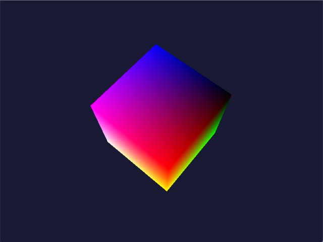
The Programmable Shading Revolution
✓ Read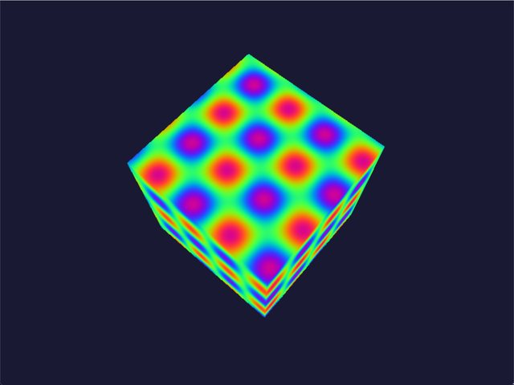
The Great Redesign
✓ Read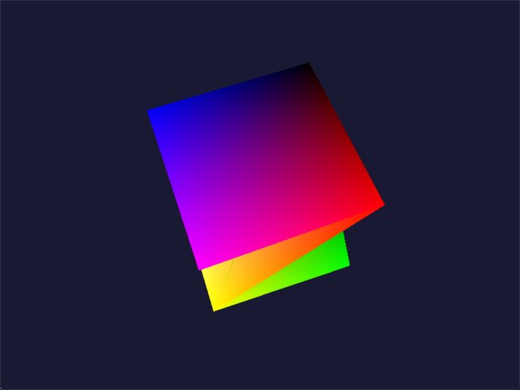
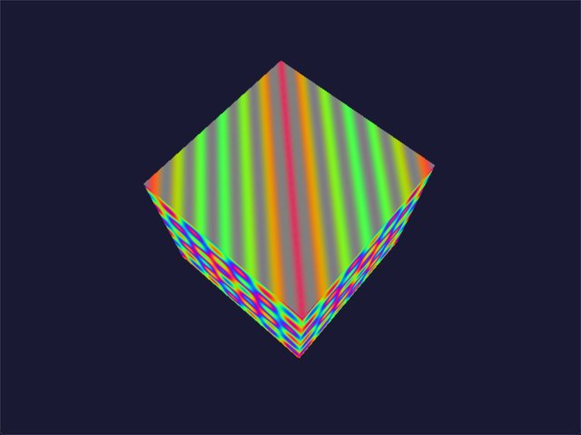
Maturity & Generality
✓ Read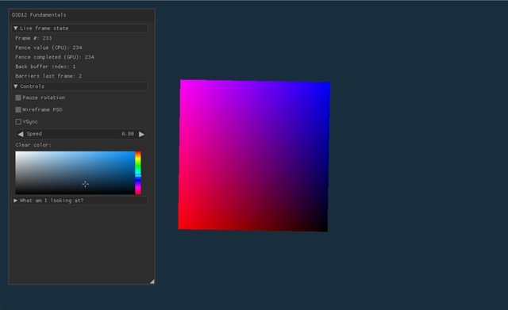
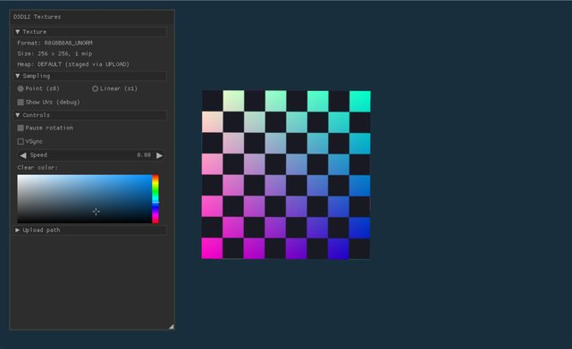
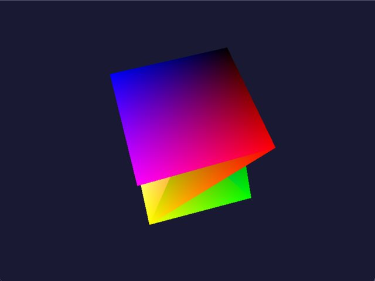
Going Explicit: The D3D12 Object Model
✓ Read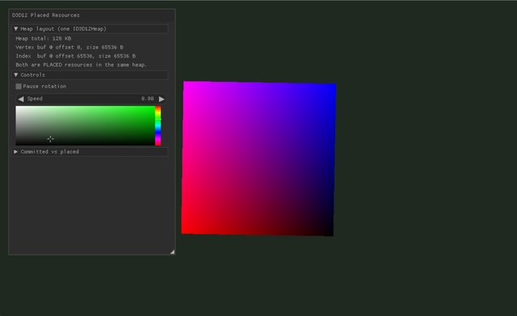
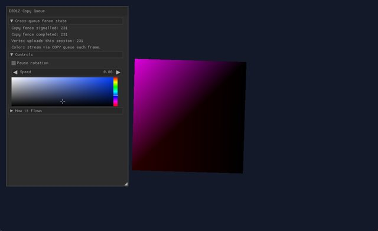
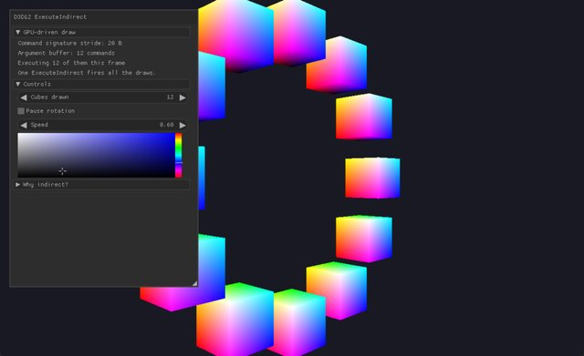
Feeding the GPU: Memory, Copies, and GPU-Driven Work
✓ Read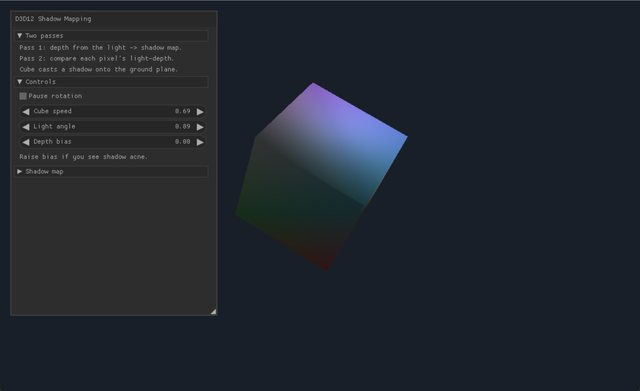
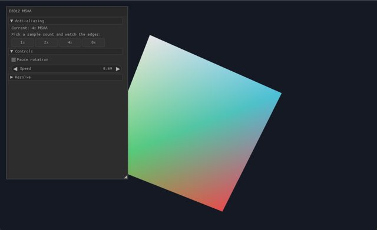
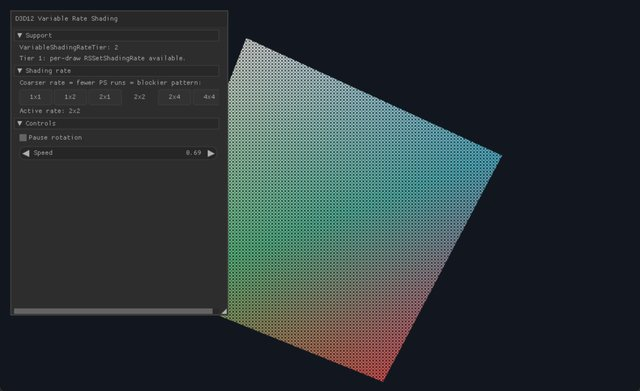
Image Quality & the Modern Pipeline
✓ Read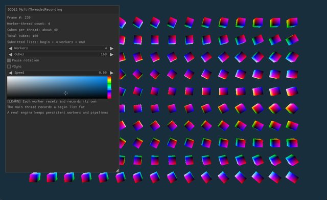
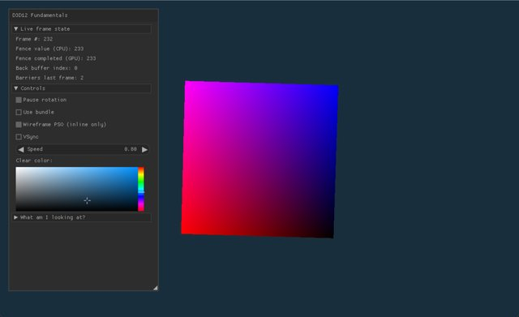
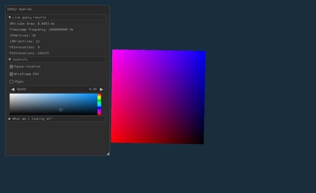
Recording & Querying at Scale (Tier 5)
✓ Read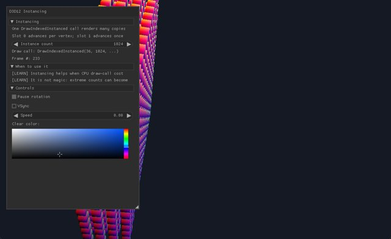
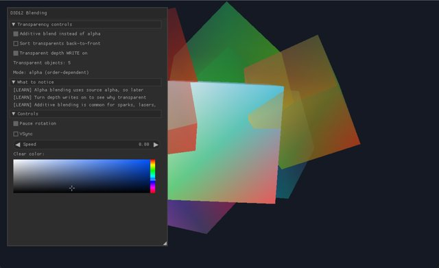
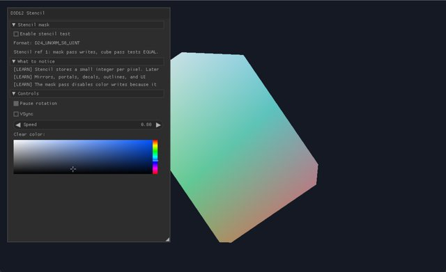
Classic Pipeline Mastery (Tier 6)
✓ Read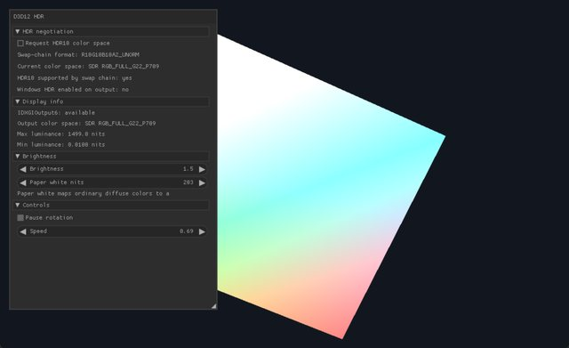
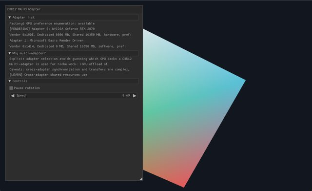
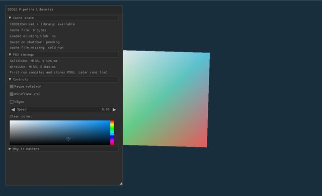
Presentation, Devices & Advanced Resources (Tiers 7–8)
✓ Read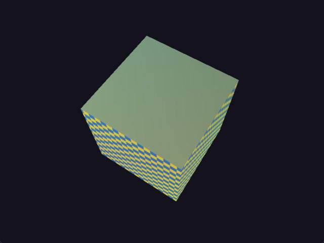
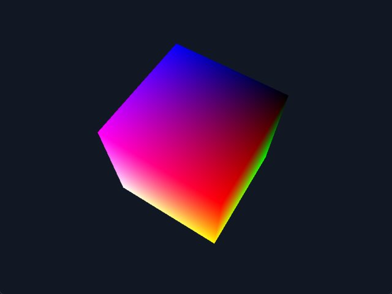
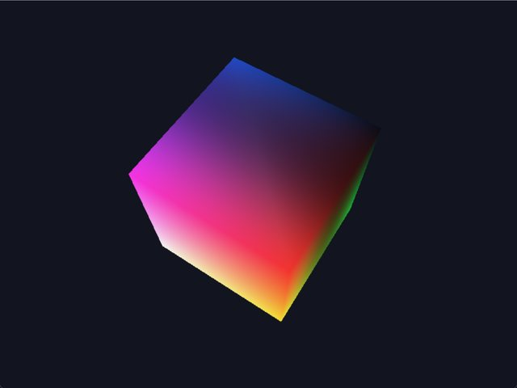
The Frontier: Where Direct3D Is Heading
✓ ReadSynthesis: Seeing the Whole Arc
✓ Read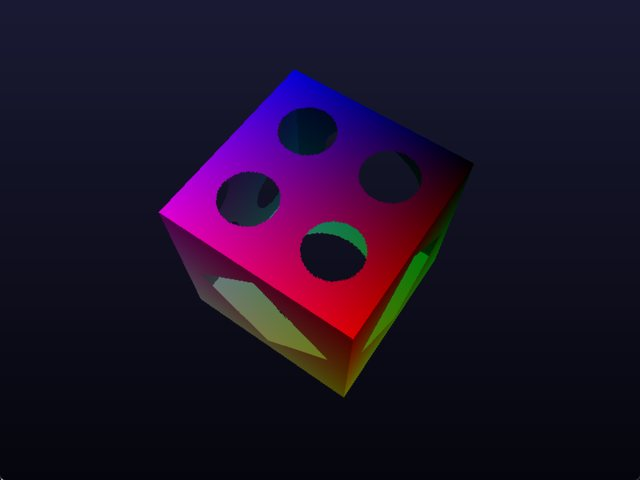
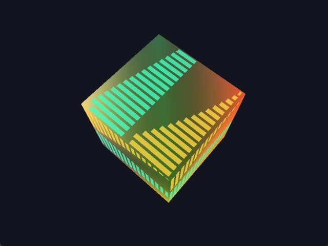
Appendices
✓ Read57 cubes, captured from the real samples
Hover any tile to watch it spin.